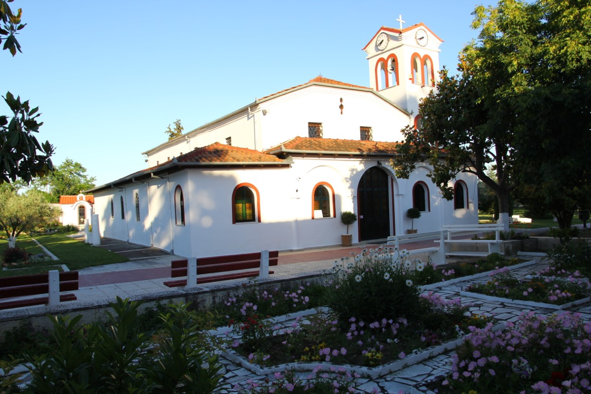
Ένα γυναικείο μοναστήρι του 16ου αιώνα, ένα χιλιόμετρο από τον Κορινό και επτακόσια μέτρα από τη θάλασσα του Θερμαϊκού.
Η Μονή του Αγίου Γεωργίου χρονολογείται στα μέσα του 16ου αιώνα — η παλαιότερη γνωστή αναφορά της βρίσκεται σε ένα τουρκικό χοτζέτι του 1561, που πιστοποιεί κτηματική περιουσία της μονής στον Κορινό. Σήμερα εκτείνεται σε επτά στρέμματα, περιφραγμένη με τοίχους δύο μέτρων, και λειτουργεί ως μετόχι της Ιεράς Μονής Αγίου Διονυσίου εν Ολύμπω, υπό την Ιερά Μητρόπολη Κίτρους, Κατερίνης και Πλαταμώνος.
Στο κέντρο της αυλής δεσπόζει το καθολικό, αφιερωμένο στον Άγιο Μεγαλομάρτυρα Γεώργιο τον Τροπαιοφόρο. Πρόκειται για μονόκλιτη, μονόχωρη βασιλική χωρίς τρούλο, με εξωνάρθηκα για τα κεριά και το ιερό βήμα χωρισμένο από τον κυρίως ναό με ξύλινο τέμπλο.
Η μονή διαδραμάτισε σημαντικό ρόλο στα δύσκολα χρόνια της ιστορίας της περιοχής: υπήρξε καταφύγιο για τους πρόσφυγες της Μικρασιατικής καταστροφής του 1922, προσφέροντάς τους φιλοξενία, οικονομική και πνευματική στήριξη, και κράτησε άσβεστη τη φλόγα της πίστης στα χρόνια της Τουρκοκρατίας και της Κατοχής.
Το παρεκκλήσι του Αγίου Νεκταρίου ανεγέρθηκε το 1965 επί ηγουμενίας μοναχής Κυριακής και ανακαινίσθηκε εκ βάθρων το 2018, επί ηγουμενίας Γεροντίσσης Ειρήνης, με τη φροντίδα της νυν Καθηγουμένης, μοναχής Αγαθονίκης.
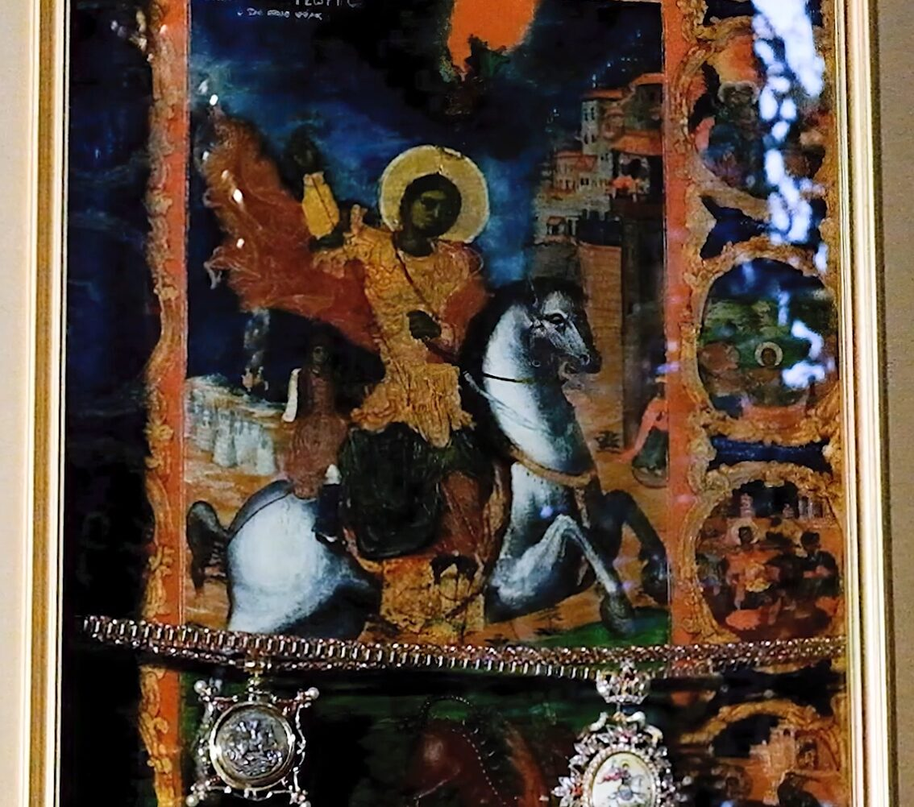
Η παλαιά εφέστιος εικόνα του Αγίου, στολισμένη με τάματα των πιστών, θεωρείται θαυματουργή και αποτελεί το κέντρο προσκυνήματος της μονής.
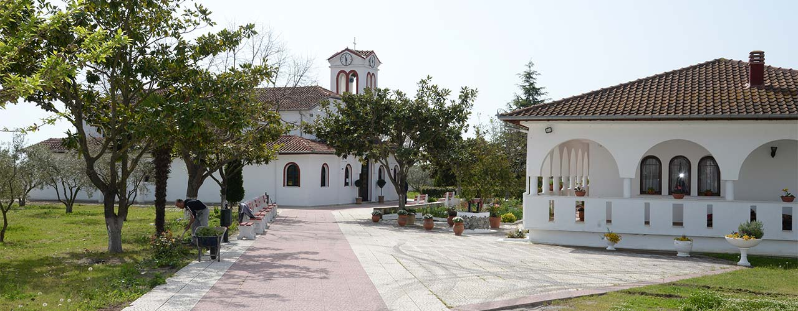
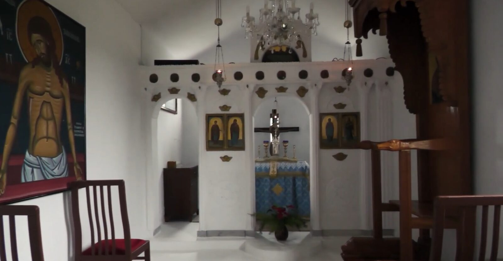
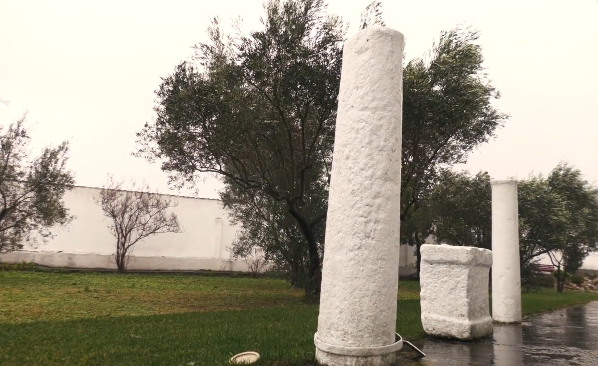
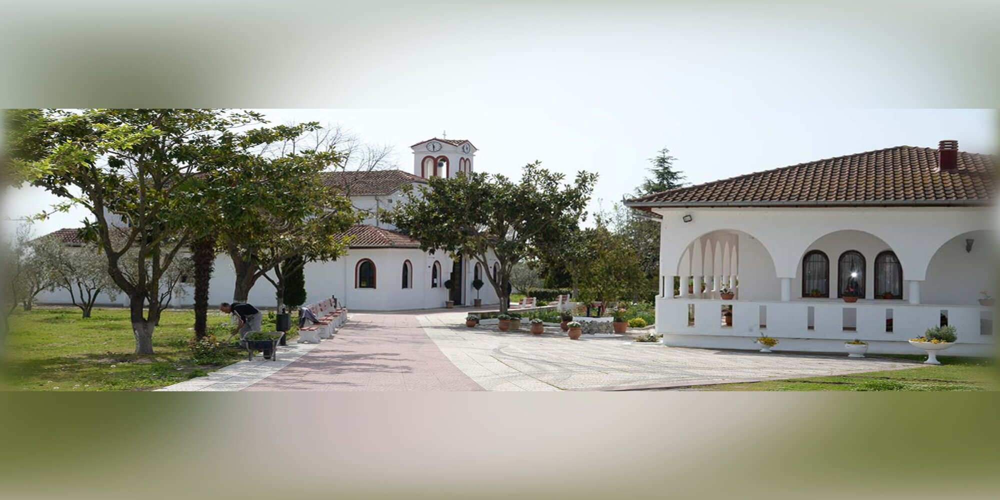
Κινήστε το ποντίκι πάνω στην εικόνα για μια τρισδιάστατη θέα της αυλής
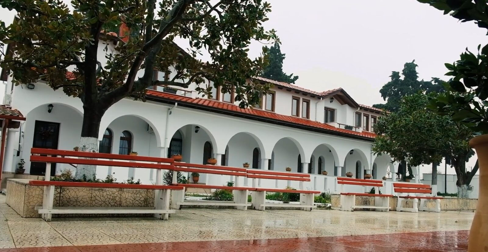
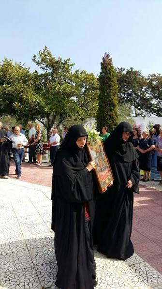
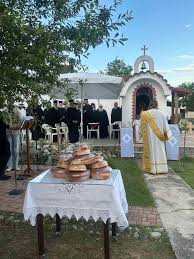
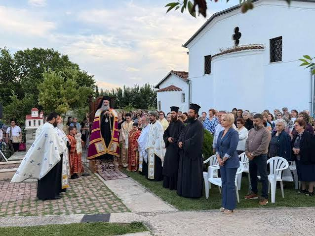
Η μονή πανηγυρίζει τρεις φορές τον χρόνο, με αγρυπνίες, εσπερινούς και τη λιτάνευση της εικόνας.
Η κύρια πανήγυρις της μονής, προς τιμήν του πολιούχου Αγίου.
Πανήγυρις στο ομώνυμο παρεκκλήσι, με αρτοκλασία και λιτανεία.
Πανήγυρις στο παρεκκλήσι του Αγίου Νεκταρίου, ανακαινισμένο το 2018.
Ανάψτε ένα ψηφιακό κερί ως ένδειξη προσευχής, όπου κι αν βρίσκεστε.
Η μονή φιλοξενεί σήμερα μια μικρή αδελφότητα μοναζουσών, αφιερωμένων στην προσευχή, την ακολουθία των ωρών και τη φιλοξενία των προσκυνητών.
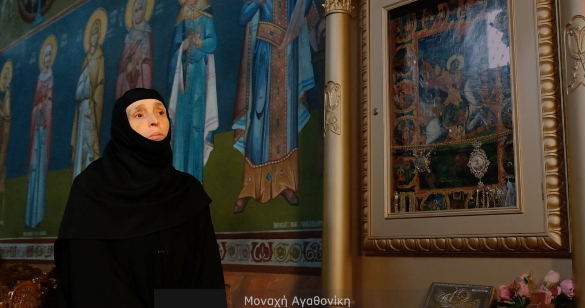
Νυν ηγουμένη της μονής.
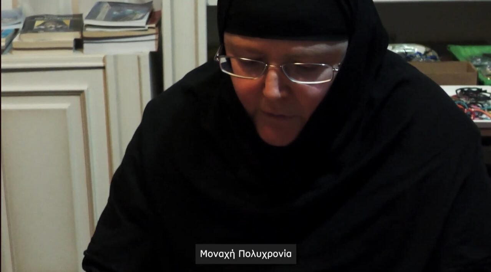
Μέλος της αδελφότητας.
Η μονή δεν δημοσιεύει σταθερό ωράριο επίσκεψης online — καλέστε πριν την επίσκεψή σας για να επιβεβαιώσετε τις ώρες, ιδίως τις ημέρες πανηγύρεων.
Όπως σε κάθε ορθόδοξη μονή, οι επισκέπτες καλούνται να φορούν διακριτική, σεμνή ενδυμασία — μακριά ρούχα και καλυμμένους ώμους — και να διατηρούν ησυχία κατά τη διάρκεια των ακολουθιών.
Η φωτογράφιση στο εσωτερικό του ναού συνήθως αποφεύγεται κατά τη διάρκεια της λατρείας — ρωτήστε τις αδελφές αν έχετε αμφιβολία.
Η μονή συντηρείται με τη βοήθεια των πιστών. Όσοι επιθυμούν να στηρίξουν το έργο και τη φιλοξενία της μονής, μπορούν να επικοινωνήσουν απευθείας μαζί μας.
Μπορείτε να επικοινωνήσετε τηλεφωνικά για να μάθετε πώς μπορείτε να βοηθήσετε — είτε με μια δωρεά, είτε με την προσφορά χρόνου ή αγαθών, είτε απλώς επισκεπτόμενοι τη μονή.
Στοιχεία τραπεζικού λογαριασμού θα προστεθούν εδώ όποτε μας τα παρέχει η μονή.
Γεια σας! Ρωτήστε με κάτι από τα παρακάτω: